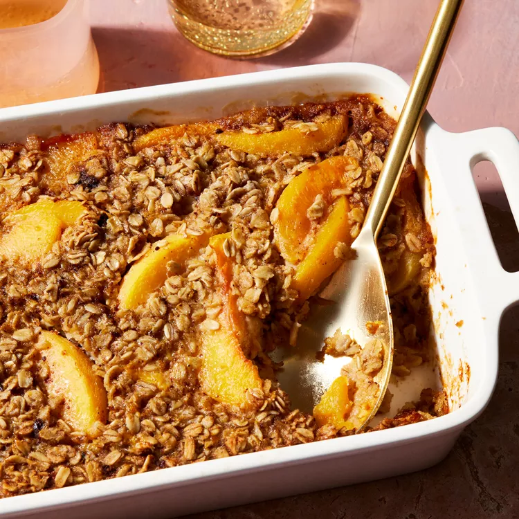

There's nothing like this peach baked oatmeal to fill you up in the morning! This brunch-ready version includes brown sugar, cinnamon, vanilla, a hint of nutmeg and orange juice and zest. You can swap out the peaches for another fruit if you prefer.

There is lots of evidence suggesting that fiber can help manage blood sugar. And beta glucan, the soluble fiber found in oats, has been shown to be especially helpful by preventing blood sugar spikes following a meal. With that said, everyone's body is different, so if you do find that your blood sugar is spiking following a serving of baked oatmeal or that you're not satisfied long enough after eating it, add some protein to your meal, like eggs, nuts or plain yogurt or kefir.
If you don't have coconut oil, you can use ghee grapeseed oil or avocado oil.
To avoid runny baked oats, make sure to bake this until set, which will take about 40 minutes. It's also important to allow it to cool for at least 10 minutes or up to 2 hours, which will help set the oats before serving.
Yes, you can use any type of milk. If you're using plant-based milk, make sure that it's plain and unsweetened. Using a different milk, or one with flavorings and sweeteners, will change the flavor and nutritional profile of the recipe.
Yes, you can use frozen peaches! There's no need to thaw them.
Serve peach baked oatmeal with a dollop of plain yogurt and a sprinkle of chopped nuts, like walnuts, pecans or almonds.
Preheat oven to 375°F. Lightly coat a 7-by-11-inch baking dish with cooking spray.
Whisk eggs, almond milk, brown sugar, coconut oil, orange zest, orange juice, vanilla, cinnamon, baking powder, nutmeg and salt together in a large bowl until smooth. Fold in oats and peaches. Pour the mixture into the prepared baking dish.
Bake until golden brown and set, about 40 minutes. Let cool for at least 10 minutes or up to 2 hours. Serve warm or at room temperature.